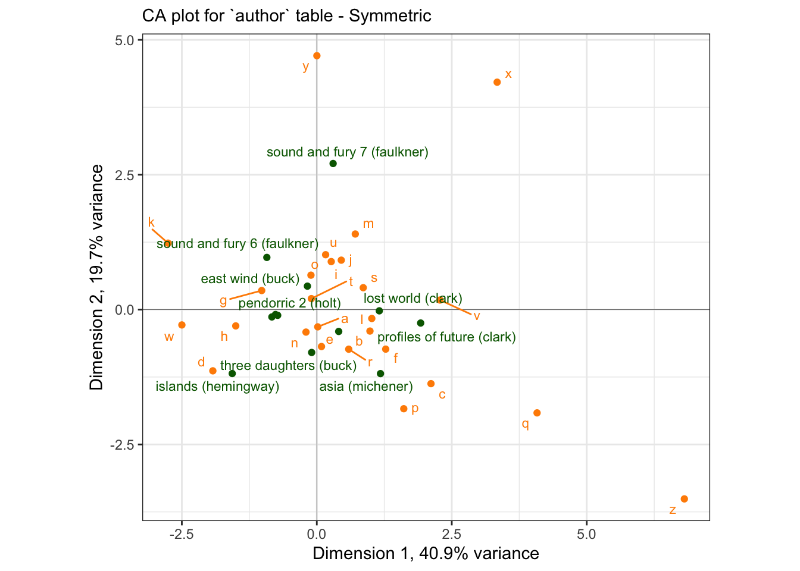
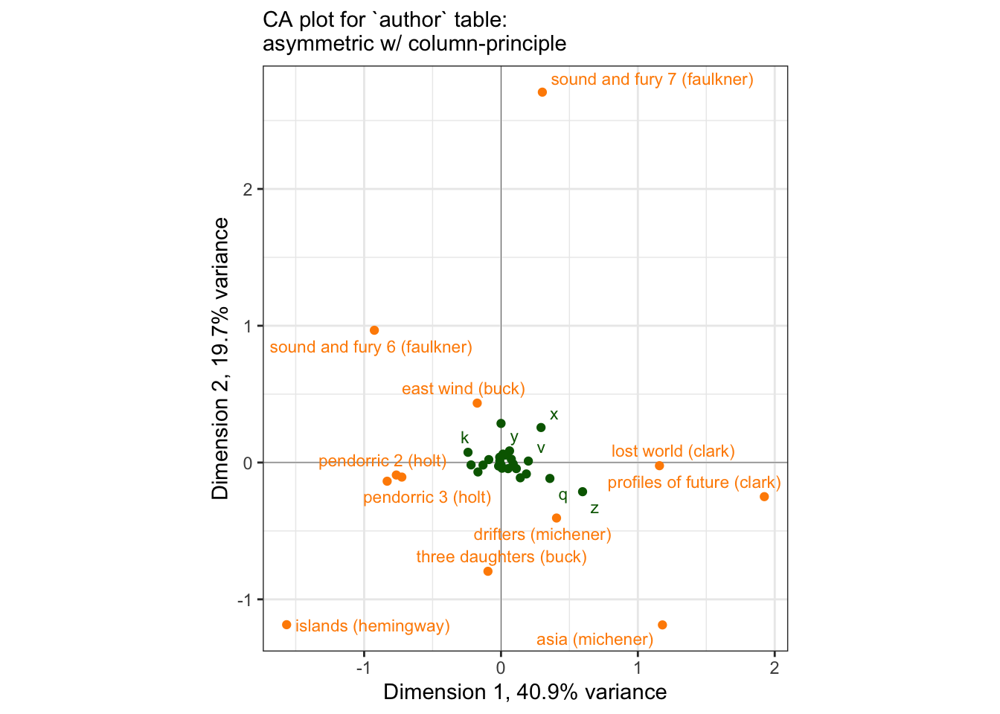

Chapter 10 Correspondence Analysis (CA)
Correspondence Analysis (CA) is a close relative of PCA that can be applied to count data. While PCA is appropriate for application when all observations are interval or ratio data, CA is built for the case when cell counts are positive integers. CA in its modern form was developed for application to survey data by French quantitative sociologists, and the most comprehensive introduction to it is probably Michael Greenacre’s Correspondence Analysis in Practice (2017). In sensory evaluation, we often apply CA to check-all-that-apply (CATA) data or to data derived from free-comment/text analysis, because these data involve positive counts. Sometimes these data meet the theoretical requirements for CA, and sometimes they do not. We won’t dig into those details here, but I also recommend checking out Abdi and Bera’s more succinct articles on the topic (2015).
None of the data we’ve been using for is exactly suited for CA (although Multiple Correspondence Analysis can be effectively used to analyze sorting data), so HGH used the author dataset that is included in the ca package (i.e., ca::author) to demonstrate the approach. We’ll follow suit.
library(tidyverse)
library(here)
library(ca)
# We have to load the `author` dataset ourselves
data(author)
author## a b c d e f g h i j k l m
## three daughters (buck) 550 116 147 374 1015 131 131 493 442 2 52 302 159
## drifters (michener) 515 109 172 311 827 167 136 376 432 8 61 280 146
## lost world (clark) 590 112 181 265 940 137 119 419 514 6 46 335 176
## east wind (buck) 557 129 128 343 996 158 129 571 555 4 76 291 247
## farewell to arms (hemingway) 589 72 129 339 866 108 159 449 472 7 59 264 158
## sound and fury 7 (faulkner) 541 109 136 228 763 126 129 401 520 5 72 280 209
## sound and fury 6 (faulkner) 517 96 127 356 771 115 189 478 558 6 80 322 163
## profiles of future (clark) 592 151 251 238 985 168 152 381 544 7 39 416 236
## islands (hemingway) 576 120 136 404 873 122 156 593 406 3 90 281 142
## pendorric 3 (holt) 557 97 145 354 909 97 121 479 431 10 94 240 154
## asia (michener) 554 108 206 243 797 164 100 328 471 4 34 293 149
## pendorric 2 (holt) 541 93 149 390 887 133 154 463 518 4 65 265 194
## n o p q r s t u v w x y z
## three daughters (buck) 534 516 115 4 409 467 632 174 66 155 5 150 3
## drifters (michener) 470 561 140 4 368 387 632 195 60 156 14 137 5
## lost world (clark) 403 505 147 8 395 464 670 224 113 146 13 162 10
## east wind (buck) 479 509 92 3 413 533 632 181 68 187 10 184 4
## farewell to arms (hemingway) 504 542 95 0 416 314 691 197 64 225 1 155 2
## sound and fury 7 (faulkner) 471 589 84 2 324 454 672 247 71 160 11 280 1
## sound and fury 6 (faulkner) 483 617 82 8 294 358 685 225 37 216 12 171 5
## profiles of future (clark) 526 524 107 9 418 508 655 226 89 106 15 142 20
## islands (hemingway) 516 488 91 3 339 349 640 194 40 250 3 104 5
## pendorric 3 (holt) 417 477 100 3 305 415 597 237 64 194 9 140 4
## asia (michener) 482 532 145 8 361 402 630 196 66 149 2 80 6
## pendorric 2 (holt) 484 545 70 4 299 423 644 193 66 218 2 127 2The author dataset is a matrix of counts for each letter of the English alphabet in several published works by various authors. As such, it’s suitable for analysis by CA. We are, in effect, asking which authors (rows) are most associated with which letters (columns) and vice versa.
The ca::ca() function has various options, but HGH used it with default settings, which we will do as well:
##
## Principal inertias (eigenvalues):
## 1 2 3 4 5 6 7
## Value 0.007664 0.003688 0.002411 0.001383 0.001002 0.000723 0.000659
## Percentage 40.91% 19.69% 12.87% 7.38% 5.35% 3.86% 3.52%
## 8 9 10 11
## Value 0.000455 0.000374 0.000263 0.000113
## Percentage 2.43% 2% 1.4% 0.6%
##
##
## Rows:
## three daughters (buck) drifters (michener) lost world (clark)
## Mass 0.085407 0.079728 0.084881
## ChiDist 0.097831 0.094815 0.128432
## Inertia 0.000817 0.000717 0.001400
## Dim. 1 -0.095388 0.405697 1.157803
## Dim. 2 -0.794999 -0.405560 -0.023114
## east wind (buck) farewell to arms (hemingway)
## Mass 0.089411 0.082215
## ChiDist 0.118655 0.122889
## Inertia 0.001259 0.001242
## Dim. 1 -0.173901 -0.831886
## Dim. 2 0.434443 -0.136485
## sound and fury 7 (faulkner) sound and fury 6 (faulkner)
## Mass 0.082310 0.083338
## ChiDist 0.172918 0.141937
## Inertia 0.002461 0.001679
## Dim. 1 0.302025 -0.925572
## Dim. 2 2.707599 0.966944
## profiles of future (clark) islands (hemingway) pendorric 3 (holt)
## Mass 0.089722 0.082776 0.079501
## ChiDist 0.187358 0.165529 0.113174
## Inertia 0.003150 0.002268 0.001018
## Dim. 1 1.924060 -1.566481 -0.724758
## Dim. 2 -0.249310 -1.185338 -0.106349
## asia (michener) pendorric 2 (holt)
## Mass 0.077827 0.082884
## ChiDist 0.155115 0.101369
## Inertia 0.001873 0.000852
## Dim. 1 1.179548 -0.764937
## Dim. 2 -1.186934 -0.091188
##
##
## Columns:
## a b c d e f g
## Mass 0.079847 0.015685 0.022798 0.045967 0.127070 0.019439 0.020025
## ChiDist 0.048441 0.148142 0.222783 0.189938 0.070788 0.165442 0.156640
## Inertia 0.000187 0.000344 0.001132 0.001658 0.000637 0.000532 0.000491
## Dim. 1 0.017623 0.984463 2.115029 -1.925632 0.086722 1.276526 -1.020713
## Dim. 2 -0.320271 -0.398032 -1.373448 -1.135362 -0.684785 -0.732952 0.353017
## h i j k l m n
## Mass 0.064928 0.070092 0.000789 0.009181 0.042667 0.025500 0.068968
## ChiDist 0.154745 0.086328 0.412075 0.296727 0.120397 0.159747 0.075706
## Inertia 0.001555 0.000522 0.000134 0.000808 0.000618 0.000651 0.000395
## Dim. 1 -1.501277 0.267473 0.453341 -2.755177 1.018257 0.712695 -0.200364
## Dim. 2 -0.302413 0.889546 0.916032 1.231557 -0.165020 1.400966 -0.417258
## o p q r s t u
## Mass 0.076572 0.015159 0.000669 0.051897 0.060660 0.093010 0.029756
## ChiDist 0.088101 0.250617 0.582298 0.111725 0.123217 0.050630 0.119215
## Inertia 0.000594 0.000952 0.000227 0.000648 0.000921 0.000238 0.000423
## Dim. 1 -0.108491 1.610807 4.079786 0.591372 0.860202 -0.100464 0.163295
## Dim. 2 0.637987 -1.837948 -1.914791 -0.734216 0.405610 0.203141 1.017140
## v w x y z
## Mass 0.009612 0.025847 0.001160 0.021902 0.000801
## ChiDist 0.269770 0.232868 0.600831 0.301376 0.833700
## Inertia 0.000700 0.001402 0.000419 0.001989 0.000557
## Dim. 1 2.281333 -2.499232 3.340505 0.001519 6.808100
## Dim. 2 0.177022 -0.284722 4.215355 4.706083 -3.509223Printing the author_ca object gives us details about the analysis, which we are going to follow HGH in not interpreting over-much. We are going to treat CA largely as a visualization method, and not get too into the math: it’s not overly complicated, but it involves a lot of saying things like “for rows (correspondingly, columns)” and I just don’t see it being worthwhile.
As always, we’re going to replace base-R plotting with ggplot2. We’ll do this in a couple of ways. First off, we can get the “standard coordinates” (per the ?ca documentation) in $colcoord and $rowcoord. Let’s see what happens if we pull them out and plot them directly
book_coords <-
author_ca$rowcoord %>%
as_tibble(rownames = "name") %>%
mutate(point_type = "book")
letter_coords <-
author_ca$colcoord %>%
as_tibble(rownames = "name") %>%
mutate(point_type = "letter")
# Now we can bind these together and plot them easily
p_symmetric <-
bind_rows(book_coords, letter_coords) %>%
ggplot(aes(x = Dim1, y = Dim2)) +
geom_vline(xintercept = 0, linewidth = 1/10) +
geom_hline(yintercept = 0, linewidth = 1/10) +
geom_point(aes(color = point_type)) +
ggrepel::geom_text_repel(aes(label = name, color = point_type),
max.overlaps = 12, size = 3) +
scale_color_manual(values = c("darkgreen", "darkorange")) +
theme_bw() +
# I am not sure if I mentioned it before, but `coord_equal()` constrains the
# axes to have equal unit spacing, which is important when we are interested
# in plotting something, like CA, that spatially imputes similarity.
coord_equal() +
theme(legend.position = "none") +
labs(x = "Dimension 1, 40.9% variance",
y = "Dimension 2, 19.7% variance",
subtitle = "CA plot for `author` table - Symmetric")
p_symmetric## Warning: ggrepel: 3 unlabeled data points (too many overlaps). Consider
## increasing max.overlaps
If we compare this to the base-R plotting version, you can see that ours is a (nicer) version:

I am not sure why there is a difference in scaling for these two maps - but it appears to be a uniform expansion factor. This “symmetric” map is not a biplot: we cannot interpret the proximity of books (rows, in green) to the letter (columns, in orange).
We can also generate various non-“symmetric” plots. In a nutshell, in CA the rows and columns of the contingency table explain the same amount of the variance (because of the sum to marginality/sum to one constraint, H. Abdi and Béra 2015), and so in order to actually produce a biplot in which the direct proximity of the row and column points is meaningful, we need to scale appropriately. I’m going to quote H. Abdi and Béra (2015, 279) directly and extensively, so that I don’t get myself reversed:
In a CA map when two row (respectively, column) points are close to each other, this means that these points have similar profiles, and when two points have the same profile, they will be located exactly at the same place (this is a consequence of the distributional equivalence principle). The proximity between row and column points is more delicate to interpret because of the barycentric principle (see section on “The Transition Formula”): The position of a row (respectively, column) point is determined from its barycenter on the column (respectively, row), and therefore, the proximity between a row point and one column point cannot be interpreted directly
But
… the plots can reflect [any] asymmetry by normalizing one set [of either rows or columns] such that the variance of its factor scores is equal to 1 for each factor… [i]n the asymmetric plot obtained… [t]he distances between the rows and columns can now be interpreted meaningfully: the distance between a row point and column point reflects their association…
In other words, by construction the standard, symmetric plot tells us that when two row (respectively, column) points are close together, we can say that their profiles are similar, but there is no direct interpretation of the proximity of a row and column point. In the asymmetric plots, the proximity of row and column points becomes meaningful.
The fastest way to do this is to use the factoextra::fviz_ca() function, which will show an improved version of the plots HGH noted “look terrible”:
library(factoextra)
p_biplot <-
fviz_ca(author_ca,
map = "colprincipal",
repel = TRUE) +
coord_equal()
p_biplotIn this plot, the columns are plotted in principal coordinates and the rows are plotted in standard coordinates. We can clean up the plot ourselves. Reading through various help files (?ca and ?plot.ca), I determined that the difference in scaling we observed between our symmetric CA plot and the default is indeed due to differences in scaling: the ca package by default gives a symmetric plot in “principal” coordinates: “In this map both the row and column points are scaled to have inertias (weighted variances) equal to the principal inertia (eigenvalue or squared singular value) along the principal axes, that is both rows and columns are in principal coordinates.” (?plot.ca vs. H. Abdi and Béra 2015). However, in the output of ca::ca(), the $rowcoord/$colcoord matrices are given in so-called “standard coordinates”, and so need to be converted to principal coordinates for plotting (?ca vs. H. Abdi and Béra 2015). Let’s see if we can get there.
# First off, we see that `plot.ca()` invisibly returns coordinates, so we can
# grab those to check our work.
author_ca_asymmetric_coords <-
plot.ca(author_ca, map = "colprincipal")# Here is where I get puzzled: if we look at the total scaled output for this,
# neither the rows or the colums have inertia equal to the (squared) singular
# values:
author_ca_asymmetric_coords$rows %>% colSums()## Dim1 Dim2
## -0.11379020 -0.07029046## Dim1 Dim2
## 1.4495184 0.1422949## [1] 0.08754348 0.06073157## [1] 0.007663861 0.003688324So you’ve got me, there! I am not sure what the ca() function is doing here. If you understand better than me, please let me know! However, just to demonstrate how we can go on to use these to build prettier versions of our asymmetric maps, we will take the saved results and pipe them into ggplot2.
author_column_asymmetric <-
author_ca_asymmetric_coords %>%
# `enframe()` takes a list and puts it into a tibble, so we can use `map()` on
# it!
enframe() %>%
# We'll make sure to capture those matrix rownames properly... note the use of
# ordered arguments passed directly to `map()`, instead of the lambda function
# ("~") form
mutate(tbl = map(value, as_tibble, rownames = "label")) %>%
unnest(tbl)
p_asymmetric <-
author_column_asymmetric %>%
ggplot(aes(x = Dim1, y = Dim2)) +
geom_vline(xintercept = 0, linewidth = 1/10) +
geom_hline(yintercept = 0, linewidth = 1/10) +
geom_point(aes(color = name)) +
ggrepel::geom_text_repel(aes(label = label, color = name),
max.overlaps = 12, size = 3) +
scale_color_manual(values = c("darkgreen", "darkorange")) +
theme_bw() +
# I am not sure if I mentioned it before, but `coord_equal()` constrains the
# axes to have equal unit spacing, which is important when we are interested
# in plotting something, like CA, that spatially imputes similarity.
coord_equal() +
theme(legend.position = "none") +
labs(x = "Dimension 1, 40.9% variance",
y = "Dimension 2, 19.7% variance",
subtitle = "CA plot for `author` table:\nasymmetric w/ column-principle")
p_asymmetric## Warning: ggrepel: 21 unlabeled data points (too many overlaps). Consider
## increasing max.overlaps
We can see the same kind of difficult-to-parse plot that HGH complained of, although the use of ggrepel and some other aesthetic adjustments make it easier to use. We can also use it to illustrate the principle that H. Abdi and Béra (2015) note in their paper:
… a row [read column here for our case] is positioned exactly at the barycenter of the columns [read: row]
author_ca_x_data <-
author_ca_asymmetric_coords$rows %>%
as_tibble(rownames = "label") %>%
# We will demonstrate with the letter "x", since it appears to be one of the
# more discriminating column points.
mutate(xend = author_ca_asymmetric_coords$cols["x", 1],
yend = author_ca_asymmetric_coords$cols["x", 2])
p_asymmetric +
geom_segment(data = author_ca_x_data,
aes(x = Dim1, y = Dim2, xend = xend, yend = yend),
linetype = 2, linewidth = 1/3, color = "orange") +
labs(subtitle = "The point for the 'x' column profile lies at the\nbarycenter of all the row points.")## Warning: ggrepel: 21 unlabeled data points (too many overlaps). Consider
## increasing max.overlapsLet’s look at the actual column profile for “x”:
(author[, "x"] / sum(author[, "x"])) %>%
round(3) %>%
as_tibble(rownames = "book") %>%
arrange(-value)## # A tibble: 12 × 2
## book value
## <chr> <dbl>
## 1 profiles of future (clark) 0.155
## 2 drifters (michener) 0.144
## 3 lost world (clark) 0.134
## 4 sound and fury 6 (faulkner) 0.124
## 5 sound and fury 7 (faulkner) 0.113
## 6 east wind (buck) 0.103
## 7 pendorric 3 (holt) 0.093
## 8 three daughters (buck) 0.052
## 9 islands (hemingway) 0.031
## 10 asia (michener) 0.021
## 11 pendorric 2 (holt) 0.021
## 12 farewell to arms (hemingway) 0.01This tells us what books have the highest count of “x”; looking at the plot, we can see that indeed “x” is closest to those novels… for the most part. Let’s keep digging a little bit. If we look at, for example, profiles of future (clark), we can see that while it is important for “x”, “x” is not so important for it…
(author["profiles of future (clark)", ] / sum(author["profiles of future (clark)", ])) %>%
round(5) %>%
as_tibble(rownames = "letter") %>%
arrange(value)## # A tibble: 26 × 2
## letter value
## <chr> <dbl>
## 1 j 0.00093
## 2 q 0.0012
## 3 x 0.002
## 4 z 0.00266
## 5 k 0.0052
## 6 v 0.0119
## 7 w 0.0141
## 8 p 0.0143
## 9 y 0.0189
## 10 b 0.0201
## # ℹ 16 more rowsBut for drifters (michener), maybe the story is different.
(author["drifters (michener)", ] / sum(author["drifters (michener)", ])) %>%
round(5) %>%
as_tibble(rownames = "letter") %>%
arrange(value)## # A tibble: 26 × 2
## letter value
## <chr> <dbl>
## 1 q 0.0006
## 2 z 0.00075
## 3 j 0.0012
## 4 x 0.0021
## 5 v 0.009
## 6 k 0.00915
## 7 b 0.0163
## 8 g 0.0204
## 9 y 0.0205
## 10 p 0.0210
## # ℹ 16 more rows…nope! Well, sort of. In fact, we have run into a common problem with Correspondence Analysis: the plots are over-influenced by uncommon observations. “x”, of course is an uncommon letter of the alphabet, and so minor variations (probably by chance in the author sample) have a large effect on the spatial arrangement of the biplot.
One way to combat this problem is to look at some other measures of configuration quality. A common quality to examine is the contribution of a variable (row or column) to each dimension. We can calculate conrtibutions from the output as the squared factor score for the row, multiplied by the row mass, and divided by the eigenvalue for the corresponding dimension, e.g., for row \(i\) and dimension/component/factor \(l\):
\[ctr_i=\frac{f_{i,l}^2r_{i}}{\lambda_l}\]
author_ctrs <-
tibble(
letter = author_ca$colnames,
ctr_1 = (author_ca$colmass * (author_ca$colcoord[, 1])^2 / author_ca$sv[1]),
ctr_2 = (author_ca$colmass * (author_ca$colcoord[, 2])^2 / author_ca$sv[2])
) %>%
mutate(across(where(is.numeric), ~round(., 2)))
author_ctrs %>%
ggplot(aes(x = ctr_1, y = ctr_2)) +
geom_point() +
ggrepel::geom_text_repel(aes(label = letter)) +
theme_bw() +
labs(x = "Contribution to Dimension 1",
y = "Contribution to Dimension 2")We can see that “y” contributes disproportionately to Dimension 2, and that “d”, “w”, and “h” are the largest contributors to Dimension 1. We can take this information to help build a potentially more useful visualization:
# Neat functionality: remove a layer from a compiled ggplot2 to avoid more work.
# You can see what layers are in a `gg` object by using [object]$layers
ggedit::remove_geom(p_symmetric, geom = "point") +
geom_point(data = . %>%
filter(point_type == "letter") %>%
left_join(author_ctrs, by = c("name" = "letter")),
mapping = aes(size = map2_dbl(ctr_1, ctr_2, sum)),
color = "orange") +
scale_size_continuous(range = c(0, 3)) +
labs(subtitle = "CA symmetric plot with point size representing summed\ncontribution to Dimensions 1 and 2")## Registered S3 method overwritten by 'ggedit':
## method from
## +.gg ggplot2## Warning: ggrepel: 4 unlabeled data points (too many overlaps). Consider
## increasing max.overlapsNow even though we cannot directly interpret proximity of books to letters, we can say that the fact that sound and fury 7 (faulkner) is strongly separated by Dimension 2 is probably due to an unusual proportion of “y” in the text: and we’d be right! It is the 11th most common letter in that row, as compared to many of the other examples we looked at above (scroll up and check to see if I’m right!).
(author["sound and fury 7 (faulkner)", ] / sum(author["sound and fury 7 (faulkner)", ])) %>%
round(5) %>%
as_tibble(rownames = "letter") %>%
arrange(-value) %>%
print(n = 12)## # A tibble: 26 × 2
## letter value
## <chr> <dbl>
## 1 e 0.111
## 2 t 0.0976
## 3 o 0.0856
## 4 a 0.0786
## 5 i 0.0755
## 6 n 0.0684
## 7 s 0.0659
## 8 h 0.0582
## 9 r 0.0471
## 10 l 0.0407
## 11 y 0.0407
## 12 u 0.0359
## # ℹ 14 more rowsThus, we can use some careful exploration of data combined with some additional quantities to help us use CA to really explore a data set.
10.1 Packages used in this chapter
## R version 4.4.1 (2024-06-14)
## Platform: x86_64-apple-darwin20
## Running under: macOS 15.2
##
## Matrix products: default
## BLAS: /Library/Frameworks/R.framework/Versions/4.4-x86_64/Resources/lib/libRblas.0.dylib
## LAPACK: /Library/Frameworks/R.framework/Versions/4.4-x86_64/Resources/lib/libRlapack.dylib; LAPACK version 3.12.0
##
## locale:
## [1] en_US.UTF-8/en_US.UTF-8/en_US.UTF-8/C/en_US.UTF-8/en_US.UTF-8
##
## time zone: America/New_York
## tzcode source: internal
##
## attached base packages:
## [1] stats graphics grDevices datasets utils methods base
##
## other attached packages:
## [1] factoextra_1.0.7 ca_0.71.1 here_1.0.1 lubridate_1.9.3
## [5] forcats_1.0.0 stringr_1.5.1 dplyr_1.1.4 purrr_1.0.2
## [9] readr_2.1.5 tidyr_1.3.1 tibble_3.2.1 ggplot2_3.5.1
## [13] tidyverse_2.0.0
##
## loaded via a namespace (and not attached):
## [1] gtable_0.3.5 xfun_0.49 bslib_0.7.0 ggrepel_0.9.5
## [5] rstatix_0.7.2 tzdb_0.4.0 vctrs_0.6.5 tools_4.4.1
## [9] generics_0.1.3 fansi_1.0.6 highr_0.10 pkgconfig_2.0.3
## [13] lifecycle_1.0.4 compiler_4.4.1 farver_2.1.2 munsell_0.5.1
## [17] carData_3.0-5 httpuv_1.6.15 htmltools_0.5.8.1 sass_0.4.9
## [21] yaml_2.3.8 pillar_1.9.0 later_1.3.2 car_3.1-2
## [25] ggpubr_0.6.0 jquerylib_0.1.4 cachem_1.1.0 abind_1.4-5
## [29] mime_0.12 tidyselect_1.2.1 digest_0.6.37 stringi_1.8.4
## [33] bookdown_0.39 labeling_0.4.3 rprojroot_2.0.4 fastmap_1.2.0
## [37] grid_4.4.1 colorspace_2.1-0 cli_3.6.3 magrittr_2.0.3
## [41] utf8_1.2.4 broom_1.0.6 withr_3.0.0 shinyBS_0.61.1
## [45] scales_1.3.0 promises_1.3.0 backports_1.5.0 timechange_0.3.0
## [49] rmarkdown_2.27 ggsignif_0.6.4 hms_1.1.3 ggedit_0.4.1
## [53] shiny_1.8.1.1 evaluate_0.23 knitr_1.46 miniUI_0.1.1.1
## [57] rlang_1.1.4 Rcpp_1.0.13 shinyAce_0.4.3 xtable_1.8-4
## [61] glue_1.7.0 renv_1.0.9 rstudioapi_0.16.0 jsonlite_1.8.8
## [65] R6_2.5.1